Снять оригинальную деталь:
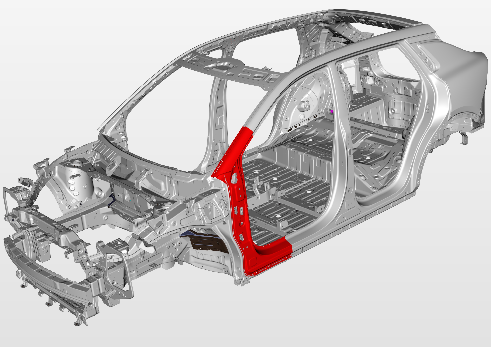
Измерить размеры геометрии кузова для правки, проверить соединительные элементы на предмет Деформация;
Использовать измерительные инструменты, такие как телескопическая измерительная линейка.
Снять оригинальную деталь:
Выполнить резку по линиям, указанным на рисунке, удалить обрезанные кромки;
Оператор может ориентироваться по поперечному сечению ключевых зон для регулировки положения и глубины реза;
Не допускается повреждение внутренних усилителей.
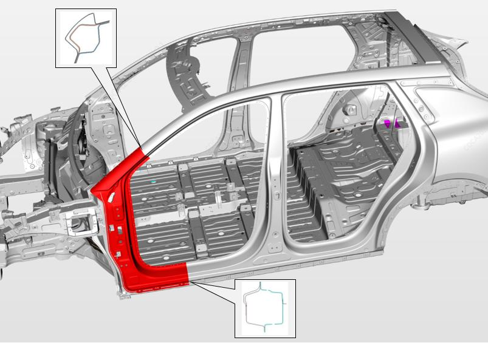
Удалить герметик в зоне сварки до обнажения сварочных точек;
С помощью подходящего инструмента высверлить обнаженные сварные точки ①;
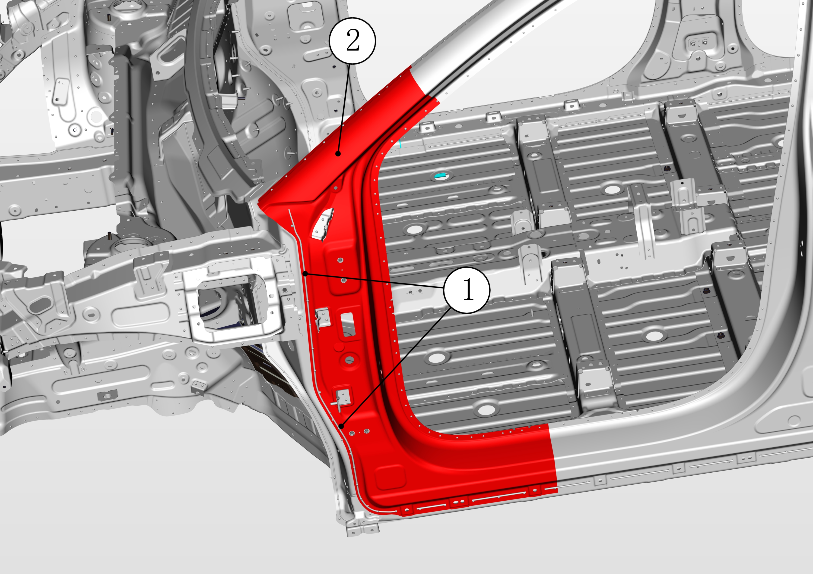
С помощью зубила и молотка разъединить сварочные точки и снять внешнюю панель боковины стойки A ②.
Подготовка новой детали:
Обрезать внешнюю панель боковины стойки A на верстаке, оставив поперечное сечение достаточной ширины для установки новой детали;
Удалить антикоррозионное покрытие в местах сварки на обрезанной детали внешней панели боковины стойки A (новой детали);
Нанести грунтовочный состав для сварки в местах сварки новой детали;
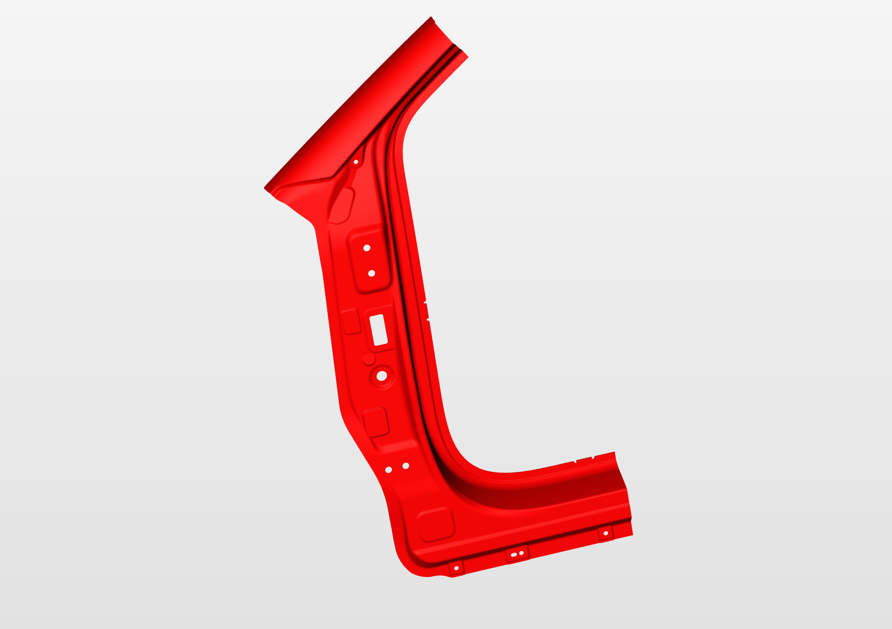
Очистить зону работ от сварочного грата, удалить антикоррозионное покрытие в зоне соединения кузова;
Нанести грунтовочный состав для сварки в зоне ①;
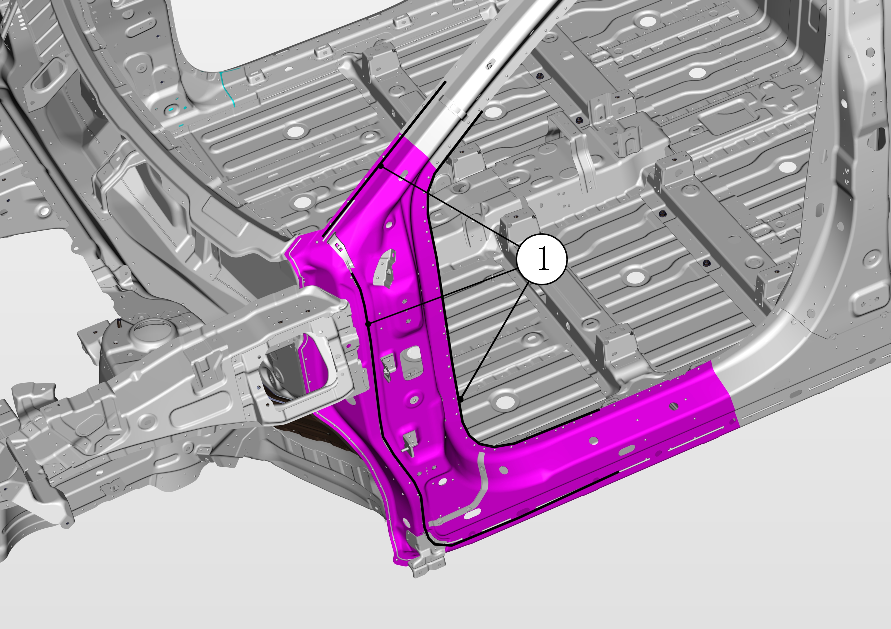
在前车门上、下铰链安装孔与侧围外板配合处“箭头”区域涂抹透焊底漆，区域尺寸：30mmX60mm；
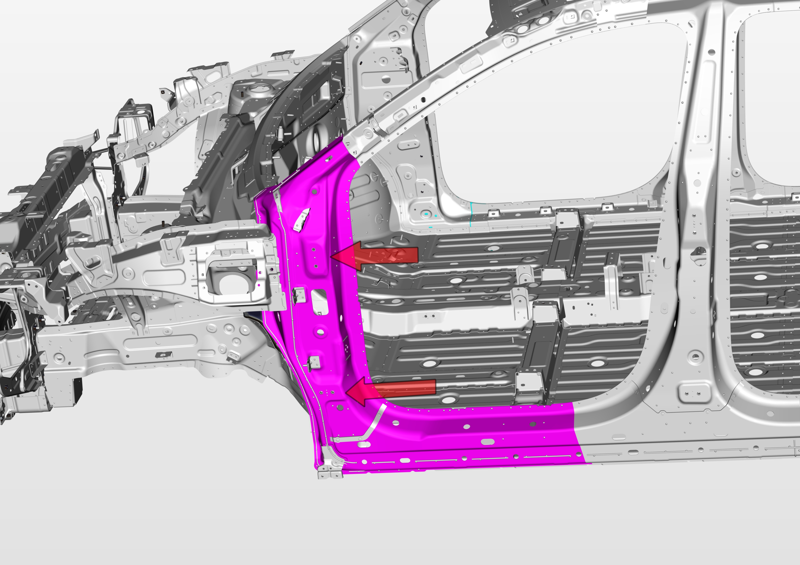
С помощью самофиксирующихся зажимов зафиксировать новую внешнюю панель боковины стойки A ① на автомобиле;
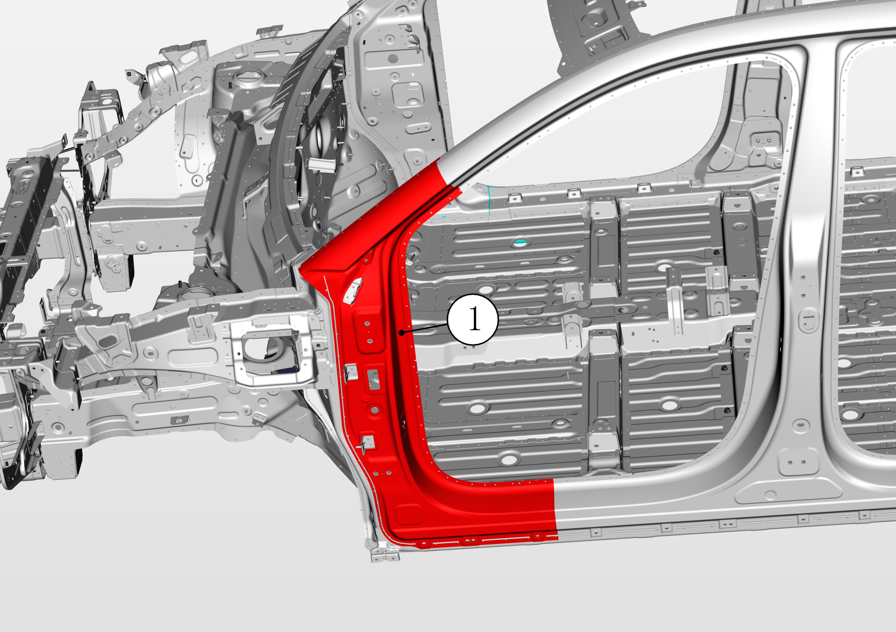
Установить переднюю дверь, отрегулировать установочное положение внешней панели боковины стойки A.
Сварка:
Установить внешнюю панель боковины стойки A ① на автомобиль, зафиксировать зажимами;
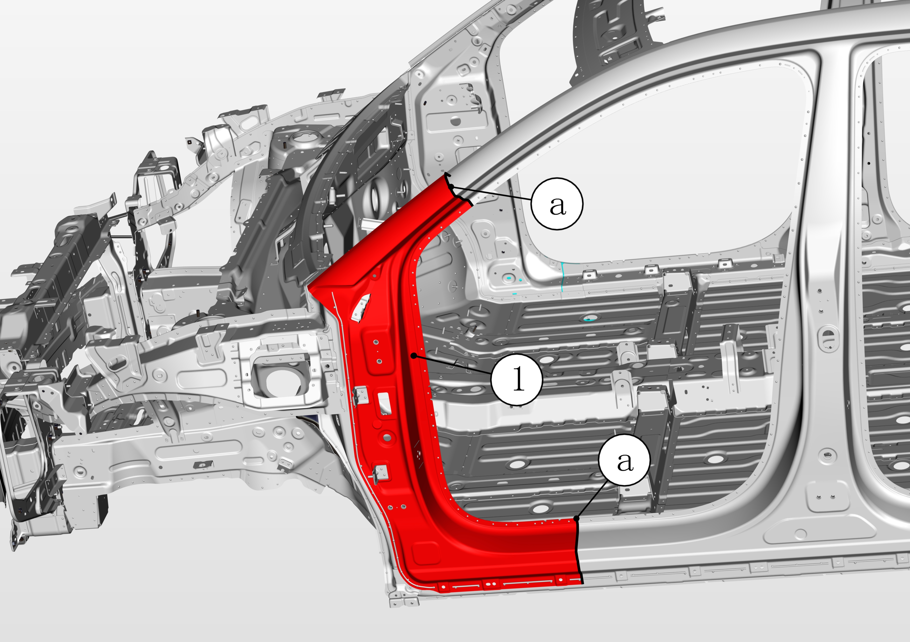
Проверить, перекрывается ли компонент с кромкой автомобиля, a: примерно 50 mm;
Подрезать кромки листового металла, удалить излишки для формирования идеального сварочного зазора;
С помощью точечной сварки сварить зону соединения ①, указанную на рисунке;
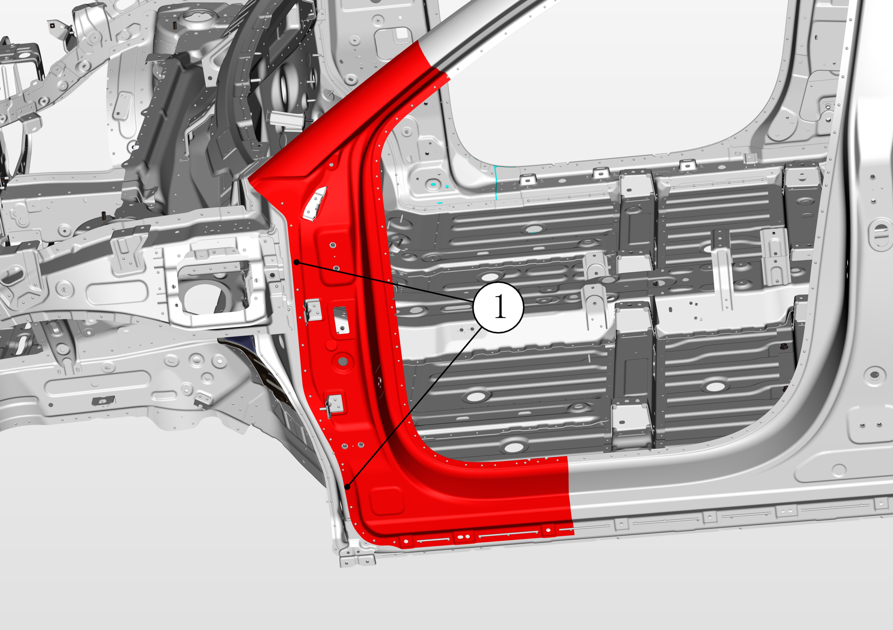
Зачистить сварные швы, удалить сварочный грат;
Выполнить антикоррозийную обработку в новой зоне сварки;
С помощью сварочного аппарата MIG сварить зону соединения ①, указанную на рисунке;
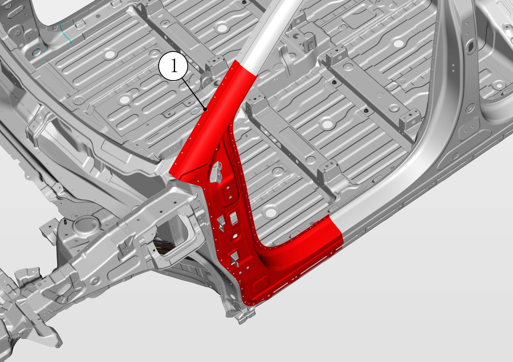
Выровнять места сварки, удалить сварочный грат;
Выполнить антикоррозийную обработку в новой зоне сварки;
С помощью сварочного аппарата MIG сварить сварочный шов ①;
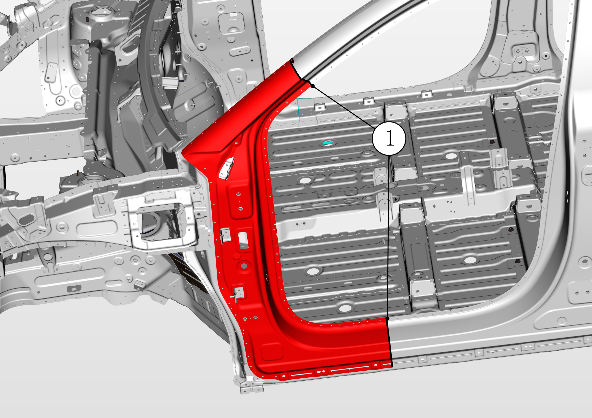
Выровнять места сварки, удалить сварочный грат;
Выполнить антикоррозийную обработку в новой зоне сварки;
Предварительно установить крыло ① на белый кузов;
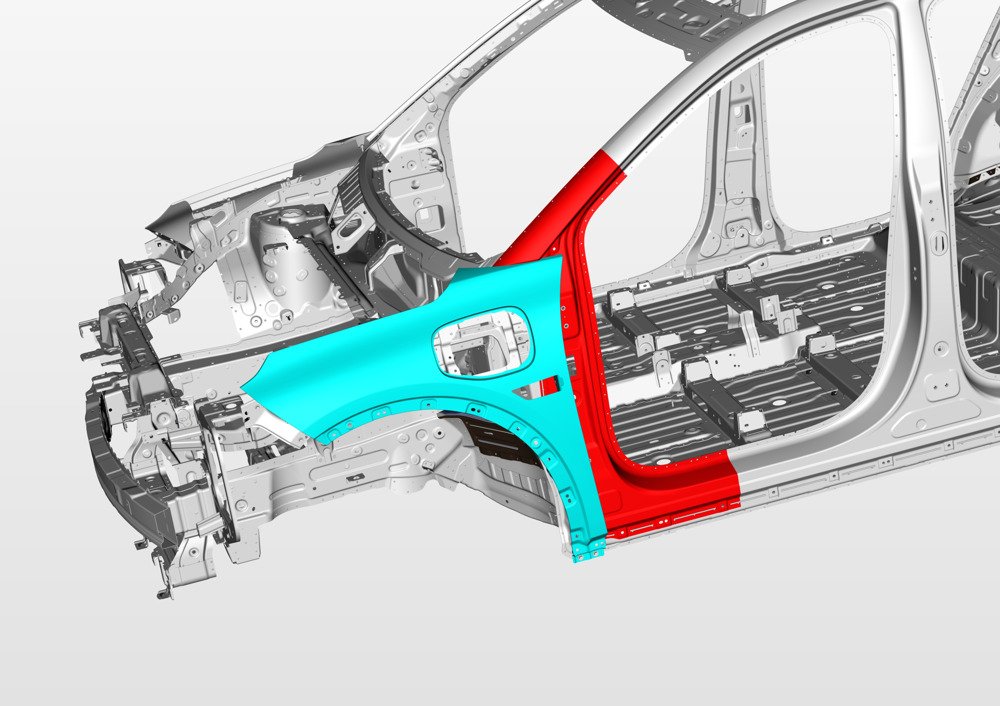
В соответствии с точками крепления крыла определить положение кронштейна ① и кронштейна ② и нанести разметочные линии;
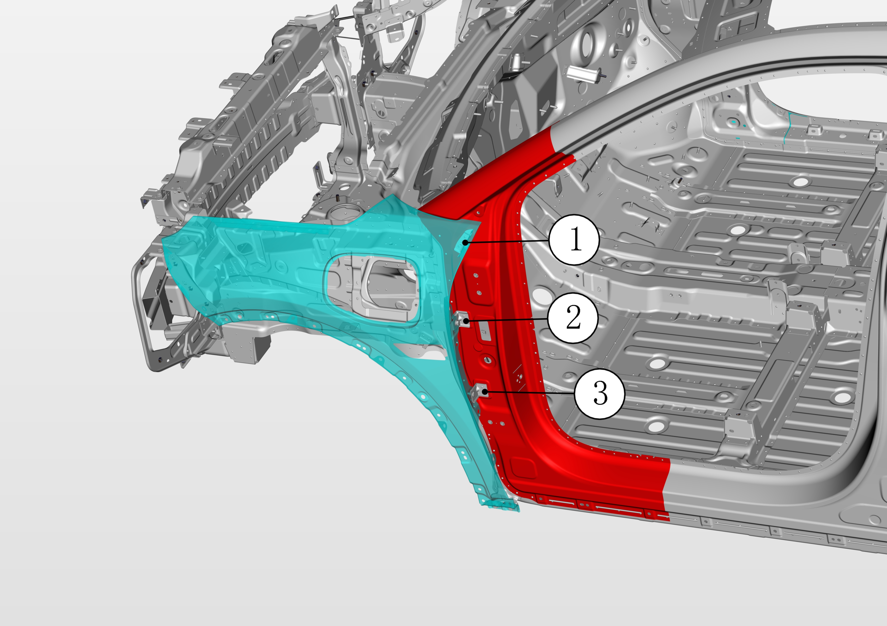
Демонтировать крыло;
С помощью сварочного аппарата MIG приварить кронштейн ① и кронштейн ② в размеченных положениях;
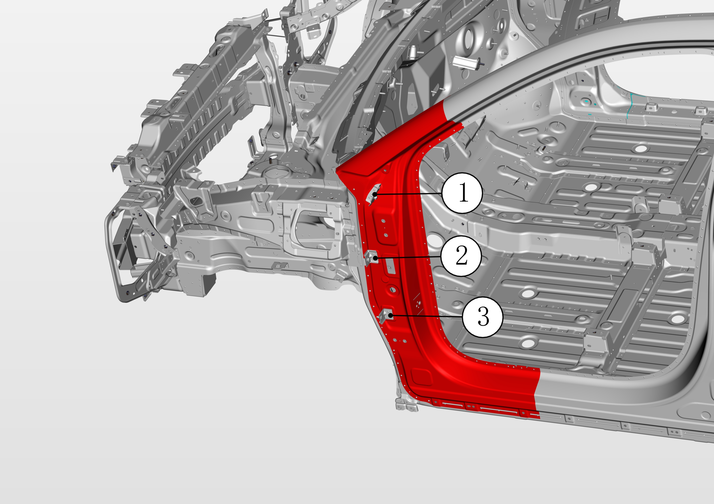
Выровнять места сварки, удалить сварочный грат;
Выполнить антикоррозийную обработку в новой зоне сварки;
Загерметизировать герметиком стыки между компонентом и кузовом.
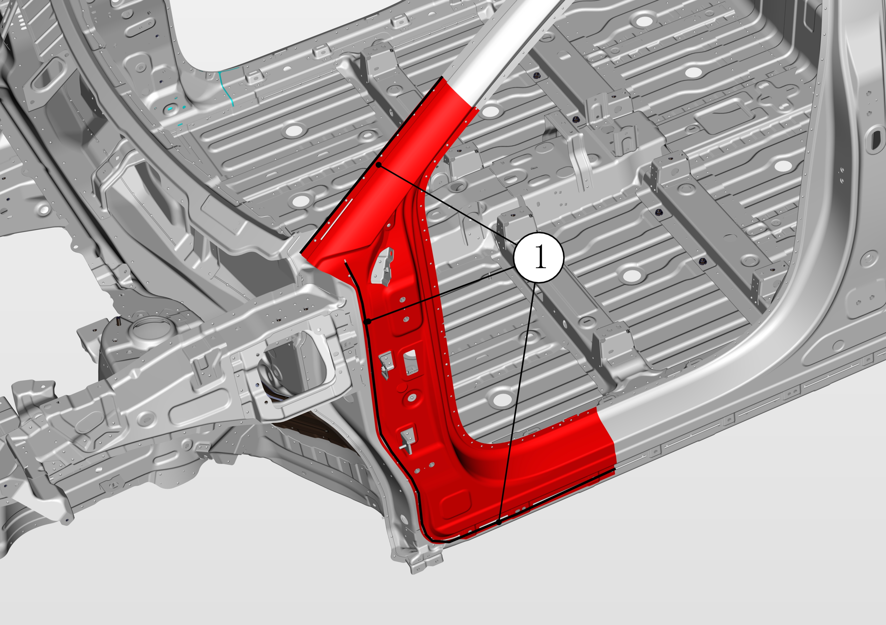